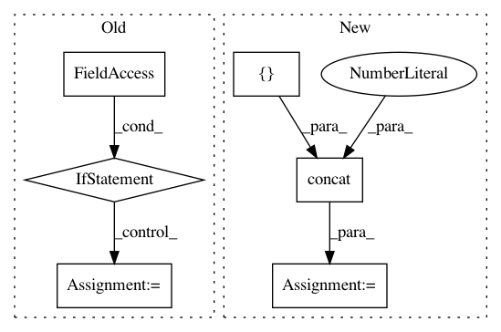

48c7953c92a3004cb07b87c47e7a5ca2a9b2c83e,basic/model.py,Model,_build_forward,#Model#,48
Before Change
tf.get_variable_scope().reuse_variables()
(fw_us, bw_us), (_, (fw_u, bw_u)) = bidirectional_dynamic_rnn(cell, cell, qq, q_len, dtype="float", scope="start") // [N, J, d], [N, d]
h = fw_h + bw_h
if config.pool_rnn:
u = tf.reduce_max(fw_us + bw_us, 1) // [N, d]
else:
u = fw_u + bw_u
u = tf.expand_dims(tf.expand_dims(u, 1), 1) // [N, 1, 1, d]
dot = linear(h * u, 1, True, squeeze=True, wd=config.wd, scope="dot")
// dot2 = linear(h * u, 1, True, squeeze=True, wd=config.wd, scope="dot2")
After Change
tf.get_variable_scope().reuse_variables()
(fw_us, bw_us), (_, (fw_u, bw_u)) = bidirectional_dynamic_rnn(cell, cell, qq, q_len, dtype="float", scope="start") // [N, J, d], [N, d]
h = tf.concat(3, [fw_h, bw_h])
u = tf.concat(1, [fw_u, bw_u])
u = tf.expand_dims(tf.expand_dims(u, 1), 1) // [N, 1, 1, 4d]
dot = linear(h * u, 1, True, squeeze=True, wd=config.wd, scope="dot")
In pattern: SUPERPATTERN
Frequency: 3
Non-data size: 6
Instances
Project Name: wenwei202/iss-rnns
Commit Name: 48c7953c92a3004cb07b87c47e7a5ca2a9b2c83e
Time: 2016-08-22
Author: seominjoon@gmail.com
File Name: basic/model.py
Class Name: Model
Method Name: _build_forward
Project Name: wenwei202/iss-rnns
Commit Name: ef2e9106b17ea0d8bb56cee2ce7442ca4971afae
Time: 2016-09-04
Author: seominjoon@gmail.com
File Name: basic/model.py
Class Name: Model
Method Name: _build_forward
Project Name: wenwei202/iss-rnns
Commit Name: 6c4e91a811ad9e996579f99eec9b9e6f68db72dd
Time: 2016-09-13
Author: seominjoon@gmail.com
File Name: basic/model.py
Class Name: Model
Method Name: _build_forward